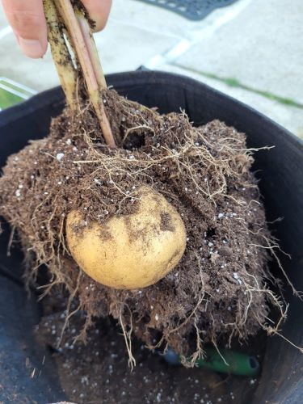
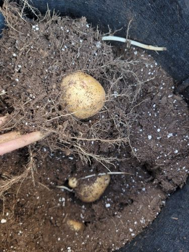
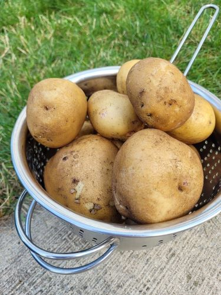
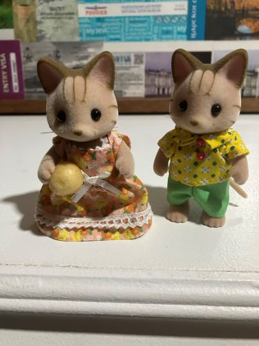

This week my partner and I harvested some potatoes we planted! I've lived in apartments most of my life, so I've never done any gardening before; I only kept sad, unhealthy houseplants. Last year we moved into a basement unit in a suburban house where we share the garden with our landlady upstairs, it's been really different but nice. Our landlady also started a vegetable garden this year and has been sharing tons of food with us. She's Korean and grows a lot of Korean herbs and veggies that I hadn't tried before. It's difficult living in the suburbs as someone who can't drive; the buses are super unreliable and everything's far away, but having a garden and our own washer and dryer has made up for that. Plus it's much cheaper than Toronto.
The landlady was super excited about the potatoes and asked to watch the harvest (of course she got some potatoes too). When we first started digging them up, I expected to find that they had died or hadn't grown at all, but they turned out perfectly! Most likely because my partner did the majority of the work. We also planted some carrots that should be ready to harvest in a couple months.
So far I've made potato curry and some cheesey potato soup with them, both of which were delicious. The skins are super thin and soft at first, but they thicken and dry out over time. I also did a little photoshoot with a really tiny potato we got.
   